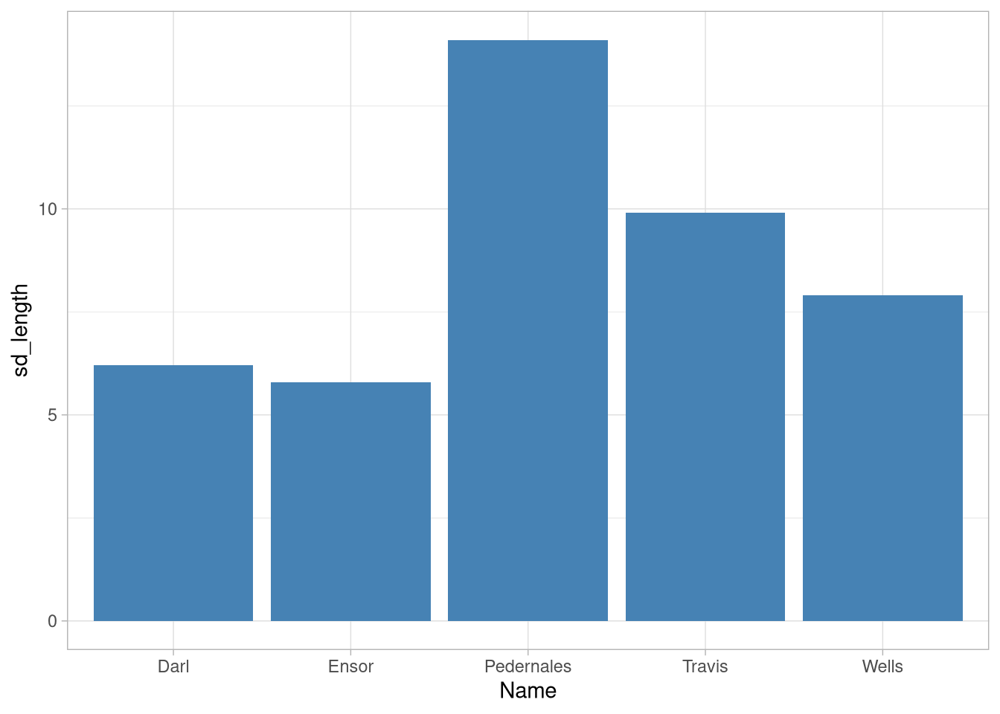

df_sample |>
group_by(Name) |>
summarise(
mean_length = round(mean(Length),1),
median_length = round(median(Length),1),
sd_length = round(sd(Length),1),
n_name = n()
) |>
mutate(
percent_name = round(n_name/sum(n_name)*100, 1)
) |>
ggplot()+
aes(x = Name, y = sd_length)+
geom_col(fill = "steelblue")+
theme_light()Data transformation
Prerequisites
Packages:
heredplyr
Data:
- dartpoints.csv
Start:
- open your R Project, create a new script file
- load library
here, install and load librarydplyr - import data “dartpoints.csv
Hints:
install.packages(),library(),here(),read.csv()
Course overview
In this course, you will learn how to:
- select specific columns or remove them –
select() - rename your columns or change their position –
rename(),relocate() - create new columns and change the values based on different conditions –
mutate(),case_when() - filter specific rows based on various conditions –
filter() - order your rows from lowest to highest values (or vice versa) –
arrange() - group your data and calculate different summary statistics –
summarise(),group_by() - work with different functions more effectively with the pipe operator –
|>
At the end, you will be able to create and understand such a crazy code:
package dplyr
- we will work with the package
dplyrwhich uses tidy data logic (one variable = one column, one observation = one row,…) - a big advantage of this package is that it has more intuitive and human readable syntax
- let’s say we want to analyse only those dartpoints that have name “Travis”
- in R base, the code to select only dartpoints of that type, would look like this:
df_dartpoints[df_dartpoints$Name == "Travis",]This is a solution with the function filter() from the dplyr package:
filter(df_dartpoints, Name == "Travis")Similarly, you can also select different columns by their name:
R base solution:
df_dartpoints[, c("Name", "Length", "Width", "Weight")]- and this is the
dplyrsolution with functionselect():
select(df_dartpoints, Name, Length, Width, Weight)pipe operator - |>
|>allows you to combine various functions into one code chunks, which makes your code shorter and easier to readsyntax:
dataframe |> function_1(variable, condition) |> function_2(variable, condition)
So you can combine functions select(), filter() and head() :
df_dartpoints |>
select(Name, Length, Width, Weight) |>
filter(Name == "Travis") |>
head(4) Name Length Width Weight
1 Travis 56.5 21.1 9.5
2 Travis 54.6 22.4 10.4
3 Travis 46.3 21.3 7.5
4 Travis 57.6 18.9 8.7- notice you don´t need to repeat the name of the dataframe into every function arguments, since you already specified it in the begining of the “pipe”
select() - more details
df_dartpoints |>
select(Name, Length, Width, Weight, Blade.Sh) |>
head(4) Name Length Width Weight Blade.Sh
1 Darl 42.8 15.8 3.6 S
2 Darl 40.5 17.4 4.5 S
3 Darl 37.5 16.3 3.6 S
4 Darl 40.3 16.1 4.0 Sdf_dartpoints |>
select(Name, Length:Weight) |>
head(4) Name Length Width Thickness B.Width J.Width H.Length Weight
1 Darl 42.8 15.8 5.8 11.3 10.6 11.6 3.6
2 Darl 40.5 17.4 5.8 NA 13.7 12.9 4.5
3 Darl 37.5 16.3 6.1 12.1 11.3 8.2 3.6
4 Darl 40.3 16.1 6.3 13.5 11.7 8.3 4.0You can exclude specific columns by !
df_dartpoints |>
select(!Name) |>
head(4) Catalog TARL Quad Length Width Thickness B.Width J.Width H.Length Weight
1 41-0322 41CV0536 26/59 42.8 15.8 5.8 11.3 10.6 11.6 3.6
2 35-2946 41CV0235 21/63 40.5 17.4 5.8 NA 13.7 12.9 4.5
3 35-2921 41CV0132 20/63 37.5 16.3 6.1 12.1 11.3 8.2 3.6
4 36-3487 41CV0594 10/54 40.3 16.1 6.3 13.5 11.7 8.3 4.0
Blade.Sh Base.Sh Should.Sh Should.Or Haft.Sh Haft.Or
1 S I S T S E
2 S I S T S E
3 S I S T S E
4 S I S T S Edf_dartpoints |>
select(!Name:Quad) |>
head(4) Length Width Thickness B.Width J.Width H.Length Weight Blade.Sh Base.Sh
1 42.8 15.8 5.8 11.3 10.6 11.6 3.6 S I
2 40.5 17.4 5.8 NA 13.7 12.9 4.5 S I
3 37.5 16.3 6.1 12.1 11.3 8.2 3.6 S I
4 40.3 16.1 6.3 13.5 11.7 8.3 4.0 S I
Should.Sh Should.Or Haft.Sh Haft.Or
1 S T S E
2 S T S E
3 S T S E
4 S T S E- selecting columns with numeric variables:
df_dartpoints |>
select(where(is.numeric)) |>
head(4) Length Width Thickness B.Width J.Width H.Length Weight
1 42.8 15.8 5.8 11.3 10.6 11.6 3.6
2 40.5 17.4 5.8 NA 13.7 12.9 4.5
3 37.5 16.3 6.1 12.1 11.3 8.2 3.6
4 40.3 16.1 6.3 13.5 11.7 8.3 4.0rename()
you can change the names of your columns by
rename()functionsyntax:
rename(new_name = old_name)
df_dartpoints |>
rename(
typ_sipky = Name,
delka_sipky = Length,
sirka_sipky = Width
) |>
head(4) typ_sipky Catalog TARL Quad delka_sipky sirka_sipky Thickness B.Width
1 Darl 41-0322 41CV0536 26/59 42.8 15.8 5.8 11.3
2 Darl 35-2946 41CV0235 21/63 40.5 17.4 5.8 NA
3 Darl 35-2921 41CV0132 20/63 37.5 16.3 6.1 12.1
4 Darl 36-3487 41CV0594 10/54 40.3 16.1 6.3 13.5
J.Width H.Length Weight Blade.Sh Base.Sh Should.Sh Should.Or Haft.Sh Haft.Or
1 10.6 11.6 3.6 S I S T S E
2 13.7 12.9 4.5 S I S T S E
3 11.3 8.2 3.6 S I S T S E
4 11.7 8.3 4.0 S I S T S Erelocate()
relocate()will defautly move your chosen column to the front:
df_dartpoints |>
rename(
typ_sipky = Name,
delka_sipky = Length,
sirka_sipky = Width
) |>
relocate(delka_sipky, sirka_sipky) |>
head(4) delka_sipky sirka_sipky typ_sipky Catalog TARL Quad Thickness B.Width
1 42.8 15.8 Darl 41-0322 41CV0536 26/59 5.8 11.3
2 40.5 17.4 Darl 35-2946 41CV0235 21/63 5.8 NA
3 37.5 16.3 Darl 35-2921 41CV0132 20/63 6.1 12.1
4 40.3 16.1 Darl 36-3487 41CV0594 10/54 6.3 13.5
J.Width H.Length Weight Blade.Sh Base.Sh Should.Sh Should.Or Haft.Sh Haft.Or
1 10.6 11.6 3.6 S I S T S E
2 13.7 12.9 4.5 S I S T S E
3 11.3 8.2 3.6 S I S T S E
4 11.7 8.3 4.0 S I S T S E- note that you must already be working with the new variable names.
- you can manualy specify the position of relocated columns by aruments
.before =or.after =
df_dartpoints |>
rename(
typ_sipky = Name,
delka_sipky = Length,
sirka_sipky = Width
) |>
relocate(
delka_sipky, sirka_sipky, .after = typ_sipky
) |>
head(4) typ_sipky delka_sipky sirka_sipky Catalog TARL Quad Thickness B.Width
1 Darl 42.8 15.8 41-0322 41CV0536 26/59 5.8 11.3
2 Darl 40.5 17.4 35-2946 41CV0235 21/63 5.8 NA
3 Darl 37.5 16.3 35-2921 41CV0132 20/63 6.1 12.1
4 Darl 40.3 16.1 36-3487 41CV0594 10/54 6.3 13.5
J.Width H.Length Weight Blade.Sh Base.Sh Should.Sh Should.Or Haft.Sh Haft.Or
1 10.6 11.6 3.6 S I S T S E
2 13.7 12.9 4.5 S I S T S E
3 11.3 8.2 3.6 S I S T S E
4 11.7 8.3 4.0 S I S T S E- note the dot before arguments
.afterand.before- it indicates to R that those are not objects or variables, but arguments of a function
Before we continue:
- you can also create a new object from your selection with
<-:
df_sample <- df_dartpoints |>
select(Name, Length, Width, Weight, Base.Sh)
head(df_sample, 4) Name Length Width Weight Base.Sh
1 Darl 42.8 15.8 3.6 I
2 Darl 40.5 17.4 4.5 I
3 Darl 37.5 16.3 3.6 I
4 Darl 40.3 16.1 4.0 IFrom now on, we will continue with this dataframe, in order to reduce the number of the columns.
mutate()
this function creates new columns that are calculated from existing ones (i.e. the new columns are functions of existing variables).
syntax:
dataframe |> mutate(variable_name = function())
- here is an example of creating a new column whose values are the multiplication of length by width
df_sample |>
mutate(
square_size = Length*Width
) |>
head(4) Name Length Width Weight Base.Sh square_size
1 Darl 42.8 15.8 3.6 I 676.24
2 Darl 40.5 17.4 4.5 I 704.70
3 Darl 37.5 16.3 3.6 I 611.25
4 Darl 40.3 16.1 4.0 I 648.83- note what argument
.keep = "used"does:
df_sample |>
mutate(
square_size = Length*Width,
.keep = "used"
) |>
head(4) Length Width square_size
1 42.8 15.8 676.24
2 40.5 17.4 704.70
3 37.5 16.3 611.25
4 40.3 16.1 648.83- we will explore the function
mutate()in more detail later
filter()
- for specifying conditions for filtering,
dplyruses the following logical and mathematical operators: ==, !=, <, >, >=, <=, &, |, %in%, etc (use?dplyr::filterfor more details)
- here, we will use the symbol
>to filter out dart points with a length greater than 80 mm
df_sample |>
filter(Length > 80) Name Length Width Weight Base.Sh
1 Pedernales 109.5 49.3 28.8 I
2 Pedernales 84.0 21.2 9.3 I- and here we use
==to choose only those dartpoints which are of type “Travis”
df_sample |>
filter(Name == "Travis") Name Length Width Weight Base.Sh
1 Travis 56.5 21.1 9.5 S
2 Travis 54.6 22.4 10.4 S
3 Travis 46.3 21.3 7.5 S
4 Travis 57.6 18.9 8.7 S
5 Travis 49.1 21.4 6.9 S
6 Travis 64.6 21.5 15.0 I
7 Travis 69.0 20.9 11.4 E
8 Travis 40.1 18.4 6.3 S
9 Travis 41.5 19.2 7.5 S
10 Travis 46.3 17.9 5.9 S
11 Travis 39.6 21.5 5.4 S- alternatively, you can exclude all points of a type “Travis” by negation
!=
df_sample |>
filter(Name != "Travis") |>
head(4) Name Length Width Weight Base.Sh
1 Darl 42.8 15.8 3.6 I
2 Darl 40.5 17.4 4.5 I
3 Darl 37.5 16.3 3.6 I
4 Darl 40.3 16.1 4.0 I- add
&if you want to filter with more than one condition, for example here we will filter all points which are type “Wells” AND are heavier than 10 grams
df_sample |>
filter(Name == "Wells" & Weight > 10) Name Length Width Weight Base.Sh
1 Wells 65.4 25.1 12.6 S
2 Wells 58.9 24.4 10.5 I
3 Wells 63.1 24.7 16.3 E- Task: instead of
&try the operator|(OR) and see how the result differs
Filtering based on a vector
- you can make your code less complicated when you create vector from desired values and then filter all observations which fall into that vector by using operator
%in%
two_types <- c("Pedernales", "Ensor")
df_sample |>
filter(Name %in% two_types) |>
head(4) Name Length Width Weight Base.Sh
1 Ensor 43.5 20.1 4.6 S
2 Ensor 42.1 20.8 5.4 S
3 Ensor 42.1 25.1 5.9 S
4 Ensor 43.1 20.0 5.1 Sarrange()
- this function will order your observations from the lowest to highest (or vice versa)
df_sample |>
arrange(Length) |>
head(4) Name Length Width Weight Base.Sh
1 Darl 30.6 17.1 2.3 I
2 Darl 31.2 15.6 2.5 I
3 Darl 32.0 16.0 3.3 E
4 Darl 32.4 14.5 2.5 Idf_sample |>
arrange(desc(Length)) |>
head(4) Name Length Width Weight Base.Sh
1 Pedernales 109.5 49.3 28.8 I
2 Pedernales 84.0 21.2 9.3 I
3 Pedernales 78.3 28.1 14.8 I
4 Pedernales 70.4 30.4 13.1 Idistinct() and count()
- try to find out what these functions are doing:
df_sample |>
distinct(Name, Base.Sh) |>
head(10) Name Base.Sh
1 Darl I
2 Darl E
3 Darl S
4 Darl R
5 Darl <NA>
6 Ensor S
7 Ensor R
8 Ensor I
9 Ensor <NA>
10 Pedernales Idf_sample |>
count(Name, Base.Sh, sort = TRUE) |>
head(4) Name Base.Sh n
1 Pedernales I 32
2 Darl I 18
3 Travis S 9
4 Darl S 6summarise()
- this function is used for calculating basic summary stastics from the existing variables
- syntax:
summarise(new_variable = function(variable)) - in this case, the mean and sd values are calculated for whole dataframe:
df_sample |>
summarise(
mean_lenght = mean(Length),
sd_length = sd(Length)
) mean_lenght sd_length
1 49.33077 12.73619group_by()
- if you want to calculate summary statistic for each dartpoint type, you have to use function
group_bywhich will create groups of rows based on chosen variable, in this case “Name”
df_sample |>
group_by(Name) |>
summarise(
mean_lenght = mean(Length),
sd_length = sd(Length),
n = n()
) |>
arrange(desc(n))# A tibble: 5 × 4
Name mean_lenght sd_length n
<chr> <dbl> <dbl> <int>
1 Pedernales 57.9 14.1 32
2 Darl 39.8 6.18 28
3 Travis 51.4 9.90 11
4 Ensor 42.7 5.79 10
5 Wells 53.1 7.94 10df_sample |>
group_by(Name, Base.Sh) |>
summarise(
mean_lenght = round(mean(Length),2),
sd_length = round(sd(Length),2),
n = n()
) |>
arrange(Name) |>
head(7)# A tibble: 7 × 5
# Groups: Name [2]
Name Base.Sh mean_lenght sd_length n
<chr> <chr> <dbl> <dbl> <int>
1 Darl E 36.9 6.93 2
2 Darl I 39.5 6.59 18
3 Darl R 44.2 NA 1
4 Darl S 40.6 6.36 6
5 Darl <NA> 40 NA 1
6 Ensor I 34.9 NA 1
7 Ensor R 39.3 2.75 3back to mutate()
creating new values based on different conditions
df_sample |>
mutate(
size_cathegory = case_when(
Length > 70 ~ "big_stone",
Length < 30 ~ "small_stone",
.default = "ok_stone"
)
) |>
arrange(desc(Length)) |>
head(10) Name Length Width Weight Base.Sh size_cathegory
1 Pedernales 109.5 49.3 28.8 I big_stone
2 Pedernales 84.0 21.2 9.3 I big_stone
3 Pedernales 78.3 28.1 14.8 I big_stone
4 Pedernales 70.4 30.4 13.1 I big_stone
5 Travis 69.0 20.9 11.4 E ok_stone
6 Pedernales 67.2 27.1 15.3 I ok_stone
7 Pedernales 66.0 27.2 12.5 I ok_stone
8 Wells 65.4 25.1 12.6 S ok_stone
9 Pedernales 65.0 31.6 4.6 I ok_stone
10 Travis 64.6 21.5 15.0 I ok_stoneback to mutate()
changing existing values based on combination of two conditions
- imagine we want to create a new type of dartpoints from the Pedernales that are longer than 80 mm
- we don’t need to create a new column, but only change the values in the existing one:
df_sample |>
mutate(
Name = case_when(
Name == "Pedernales" & Length > 80 ~ "Big_Pedernales",
.default = Name
)
) |>
arrange(desc(Length)) |>
head(4) Name Length Width Weight Base.Sh
1 Big_Pedernales 109.5 49.3 28.8 I
2 Big_Pedernales 84.0 21.2 9.3 I
3 Pedernales 78.3 28.1 14.8 I
4 Pedernales 70.4 30.4 13.1 I- note that if we want to leave the other values of the variable “Name” unchanged, we do so by specifying
.default = Name
Combining plenty of functions into one huge code chunk:
df_sample |>
group_by(Name) |>
summarise(
mean_length = round(mean(Length),1),
median_length = round(median(Length),1),
sd_length = round(sd(Length),1),
n_name = n()
) |>
mutate(
percent_name = round(n_name/sum(n_name)*100, 1)
) |>
arrange(desc(n_name))# A tibble: 5 × 6
Name mean_length median_length sd_length n_name percent_name
<chr> <dbl> <dbl> <dbl> <int> <dbl>
1 Pedernales 57.9 55.8 14.1 32 35.2
2 Darl 39.8 40.1 6.2 28 30.8
3 Travis 51.4 49.1 9.9 11 12.1
4 Ensor 42.7 42.3 5.8 10 11
5 Wells 53.1 53.7 7.9 10 11 ::: fragment - we can even include ggplot() into the pipeline:
df_sample |>
group_by(Name) |>
summarise(
mean_length = round(mean(Length),1),
median_length = round(median(Length),1),
sd_length = round(sd(Length),1),
n_name = n()
) |>
mutate(
percent_name = round(n_name/sum(n_name)*100, 1)
) |>
ggplot()+
aes(x = Name, y = sd_length)+
geom_col(fill = "steelblue")+
theme_light()
Saving your result
df_result <- df_sample |>
group_by(Name) |>
summarise(
mean_length = round(mean(Length),1),
median_length = round(median(Length),1),
sd_length = round(sd(Length),1),
n_name = n()
) |>
mutate(
percent_name = round(n_name/sum(n_name)*100, 1)
) |>
arrange(desc(n_name))write.csv(df_result, here("results/dartpoints_result.csv"), row.names = F)